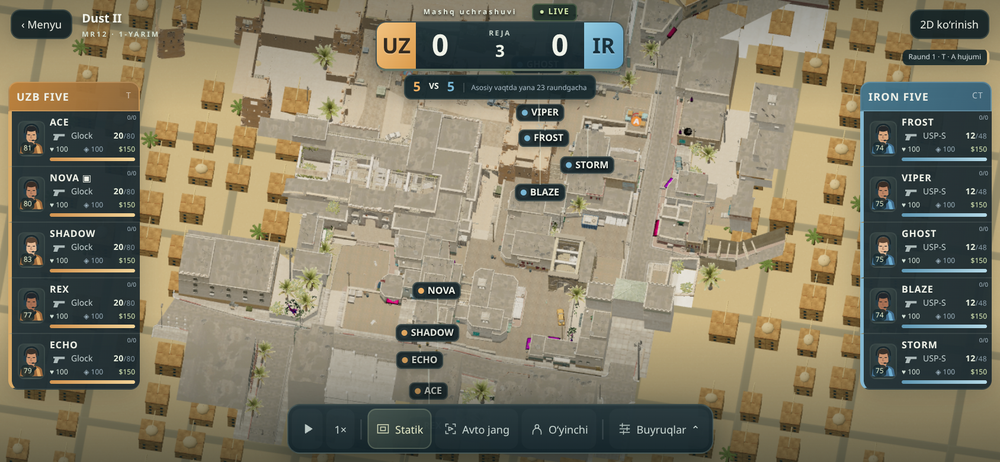

Λ
ARENAESPORTS MANAGER
ANDROID · 1.08 BETA
Yaxlit dunyo.
Yangi ko‘rinish.
Klubingizni rivojlantiring, taktikani belgilang va 5v5 jangni tomosha qiling. Dust II atrofidagi manzara endi xarita bilan yaxlit.
Android 8+OfflineYonlama ekran
APK’ni yuklash · taxminan64 MBBrauzerda o‘ynash →Eski ARENA ustiga o‘rnating. Klubingiz saqlanishi uchun avvalgi ilovani o‘chirmang.
Yangilangan ko‘rinish
Ko‘k bo‘shliq o‘rnida yer, ko‘chalar, binolar va o‘simliklar. Yangi avatarlar, qurol belgilari va tushunarli kamera tugmalari.
Statik — xarita umumiy ko‘rinishi. Avto jang — muhim voqealar. O‘yinchi — tanlangan jangchi.
Tasvir sifatini jang ichida Buyruqlar → Tasvir sifati orqali tanlang.
Telefonga o‘rnatish
- APK’ni yuklang va Downloads papkasidan oching.
- Android so‘rasa, shu brauzerdan o‘rnatishga ruxsat bering.
- ARENA’ni oching va telefonni yonlama tuting.
Dust II — moslangan asl vizual model. Qolgan 10 xaritaning asosiy modeli avvalgi ko‘rinishda. Bu telefonlarda sinash uchun beta versiya.